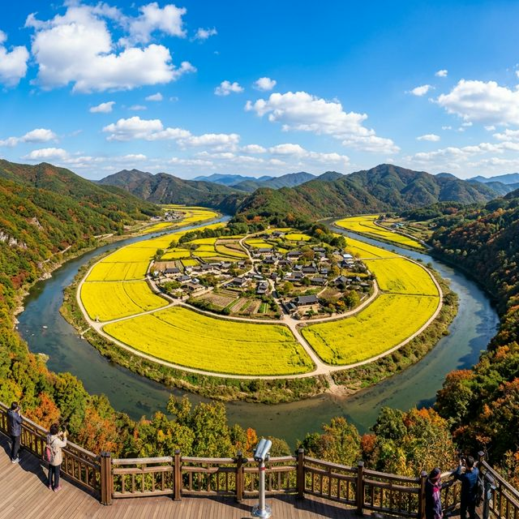
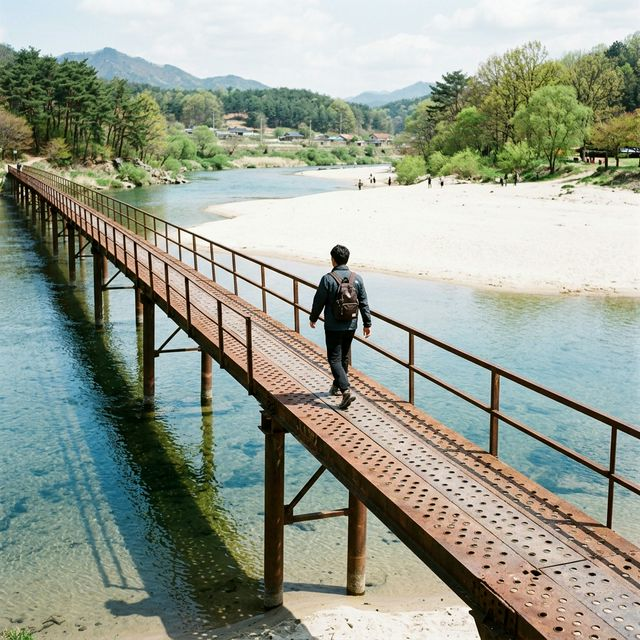
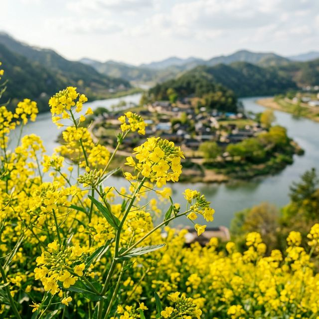

예천 회룡포 봄나들이 축제 2026 가이드 — 육지 속의 섬, 뿅뿅다리 건너 만나는 유채꽃과 모래사장 힐링
내성천의 맑은 물줄기가 휘감아 도는 육지 속의 섬, 예천 회룡포가 노란 유채꽃 물결로 새단장을 마쳤습니다. 2026년 4월 25일부터 5월 5일까지 열리는
예천 회룡포 봄나들이 축제는 때묻지 않은 자연 속에서 온 가족이 여유로운 산책과 낭만을 즐길 수 있는 최고의 봄 여행지입니다. 명물 뿅뿅다리를 건너 모래사장을 밟고,
유채꽃 향기에 취해 전망대에 올라 섬의 비경을 내려다보는 완벽한 하루 코스를 안내해 드립니다.
1. 2026 예천 회룡포 봄나들이 축제 개요
경북 예천의 대표 명소인 회룡포에서 펼쳐지는 이번 축제는 "봄바람 타고 전하는 회룡포의 이야기"를 주제로 합니다. 내성천이 350도 회전하며 만들어낸 독특한 지형 안에 자리 잡은
마을은 축제 기간 동안 거대한 정원으로 변모합니다. 4월 하순부터 5월 초 황금연휴까지 이어지는 만큼, 가족 단위 여행객들에게 최고의 쉼터를 제공합니다.
특히 올해 축제는 인위적인 시설보다는 자연 친화적인 프로그램에 집중했습니다. 마을 내 널찍한 유채꽃 단지와 청보리밭을 가로지르는 산책로를 정비하고, 곳곳에 감성적인 포토존을
배치하여 방문객들이 조용히 사색하며 봄을 만끽할 수 있도록 구성했습니다. 소란스러운 축제보다는 자연의 소리에 귀 기울일 수 있는 힐링 축제로 기획된 것이 인상적입니다.

회룡대 전망대에서 내려다본 회룡포 마을의 굽이진 물길과 노란 유채꽃 단지 / AI 제작 이미지
2. 축제 일정 및 장소 상세 정보
공식 축제는 2026년 4월 25일(토)부터 5월 5일(화)까지 11일간 진행됩니다. 어린이날까지 포함된 일정이라 연휴를 이용한 방문객이 많을 것으로 예상됩니다. 주요 행사장
주소는 경상북도 예천군 용궁면 대은리 347 일원이며, 내성천을 사이에 두고 마을 내부와 제1·2 뿅뿅다리 주변에서 다양한 이벤트가 열립니다.
주목할 만한 점은 입장료와 주차료가 전면 무료라는 것입니다. 방문객들은 회룡포 마을 입구의 주차장을 편리하게 이용할 수 있으며, 주말 혼잡 시에는 인근 임시 주차장으로
안내됩니다. 부담 없는 가격으로 수만 평의 꽃밭과 국가 지정 명승 제16호의 비경을 오롯이 누릴 수 있다는 점이 예천 여행의 가장 큰 매력 포인트입니다.
3. 명물 '뿅뿅다리' 건너기 체험과 유래
회룡포 여행의 시작과 끝은 단연 뿅뿅다리입니다. 과거 구멍이 뚫린 철판(아나방)을 이어 붙여 만든 다리를 걸을 때마다 구멍으로 물이 솟구쳐 오르는 모습에서 그 재미있는 이름이
유래되었습니다. 현재는 현대식으로 안전하게 보강되었지만, 여전히 다리를 건널 때 느껴지는 특유의 리듬감과 발밑으로 흐르는 맑은 강물은 여행의 설렘을 더해줍니다.
다리는 제1다리와 제2다리로 나뉘어 있는데, 특히 마을로 곧장 연결되는 제1 뿅뿅다리는 드라마 '가을동화'의 촬영지로도 유명합니다. 맑은 날 다리 위에서 찍는 사진은 마치 영화 속 한 장면처럼 청량한 분위기를
연출합니다. 다리를 건너며 내성천의 부드러운 물살과 은빛 모래사장에 비치는 햇살을 감상해 보시길 권장합니다.

내성천의 맑은 물 위를 가로지르는 예천의 명물 뿅뿅다리를 걷는 여행자 / AI 제작 이미지
4. 유채꽃 단지의 황금 물결과 포토존
축제 기간 회룡포 마을 내부는 수만 평의 유채꽃으로 뒤덮여 장관을 이룹니다. 4월 중순부터 피기 시작한 유채꽃은 축제 기간인 4월 하순에 절정을 맞이하여 눈이 닿는 곳마다 노란색
물결을 선사합니다. 마을 주민들이 정성껏 가꾼 꽃밭 사이로 오솔길이 나 있어 꽃을 상하게 하지 않고도 인생샷을 남길 수 있습니다.
꽃밭 곳곳에는 '회룡포' 글자 조형물과 함께 나무 벤치, 바람개비 등 감성 포토존이 마련되어 있습니다. 특히 파란 하늘과 대비되는 노란 유채꽃의 색감은 막 찍어도 작품이 되는
마법을 부립니다. 아침 이슬을 머금은 오전 시간대나 해 질 녘 부드러운 햇살이 비치는 때를 노리면 더욱 입체적이고 화사한 사진을 얻을 수 있습니다.

봄볕 아래 눈부시게 빛나는 유채꽃 한 송이와 아스라한 마을 풍경 / AI 제작 이미지
5. 회룡대 전망대: 한눈에 담는 태극 문양 비경
마을 내부를 충분히 둘러보셨다면, 비룡산에 위치한 회룡대 전망대에 올라야 합니다. 장안사를 거쳐 나무 계단을 따라 10분 정도 오르면 나타나는 이곳에서는 물길이 마을을 휘감아
돌며 만드는 환상적인 태극 문양 형상을 수직으로 조망할 수 있습니다. 왜 이곳이 '육지 속의 섬'이라 불리는지 한눈에 이해하게 됩니다.
전망대까지 오르는 길은 경사가 다소 있지만, 정상에서 마주하는 탁 트인 시야와 시원한 강바람은 피로를 씻어내기에 충분합니다. 유채꽃이 핀 마을의 전경은 위에서 보았을 때 마치 강물 위에 노란 보석이 떠 있는
듯한 착각을 불러일으킵니다. 이곳에서 사랑하는 이와 함께 비룡산 기운을 받으며 소원을 빌어보는 전통도 빼놓을 수 없는 재미입니다.
6. 은빛 모래사장 산책과 맨발 걷기
내성천이 가져다 놓은 고운 은빛 모래사장은 회룡포의 숨은 보물입니다. 요즘 유행하는 '어싱(Earthing)'을 즐기기에 더없이 좋은 장소입니다. 신발을 벗고 차갑고 부드러운
모래알을 밟으며 강변을 따라 걷다 보면 도시에서 쌓였던 스트레스가 자연스럽게 해소됩니다. 물결이 빚어놓은 모래톱의 무늬를 관찰하는 것도 소소한 즐거움입니다.
아이들은 모래사장에서 모래성 쌓기를 하며 시간을 보내고, 어른들은 강물에 발을 담그고 담소를 나누기에 좋습니다. 내성천은 수심이 깊지 않고 물살이 완만하여 안전하게 물놀이를 즐길 수 있는 천연 놀이터입니다.
수건 한 장 챙겨 들고 모래사장 한편에 앉아 흐르는 강물을 바라보는 이른바 '강멍'의 여유를 꼭 누려보시기 바랍니다.
7. 예천의 맛: 용궁역 인근 순대국밥과 오징어불고기
회룡포에서 차로 10분 거리에 있는 용궁면 소재지는 순대국밥과 오징어불고기로 유명한 먹거리의 성지입니다. 축제 구경 후 출출해진 배를 채우기에 더할 나위 없습니다. 연탄불 향이
가득 밴 매콤한 오징어불고기와 잡내 없이 깔끔한 순대국밥의 조화는 예천 여행객들이 입을 모아 칭찬하는 구성입니다.
특히 폐역이 된 용궁역은 '토끼간 빵' 판매처와 카페로 변모하여 색다른 볼거리를 제공합니다. 별주부전의 전설을 테마로 한 귀여운 빵은 선물용으로도 인기가 높습니다. 든든한 식사
후 용궁역의 고즈넉한 철길을 따라 걸으며 추억을 남기는 것도 회룡포 여행을 마무리하는 완벽한 방법이 될 것입니다.
8. 가족 나들이 최적화: 자전거와 숲길 체험
회룡포는 경사가 거의 없는 평지로 이루어져 있어 자전거를 타기에 최적입니다. 마을 입구에서 대여할 수 있는 자전거를 이용해 마을 한 바퀴를 돌면 걸어서 볼 때와는 또 다른
속도감을 느낄 수 있습니다. 시원한 가로수길과 꽃밭 사이를 지나는 코스는 아이들도 무리 없이 소화할 수 있을 만큼 평탄합니다.
또한 마을 뒷산인 비룡산 주변으로는 소나무 숲길이 잘 조성되어 있어 삼림욕을 즐기기에도 좋습니다. 강바람과 숲의 향기가 교차하는 산책로는 미세먼지 걱정 없는 청정 구역입니다.
돗자리를 챙겨 나무 그늘 아래 자리를 잡고 준비해온 도시락을 먹으며 피크닉을 즐기는 풍경은 회룡포 축제가 선사하는 가장 평화로운 모습입니다.
9. 4월 하순 예천 여행을 위한 실전 팁
회룡포는 사방이 트여 있어 자외선 차단이 필수입니다. 챙이 넓은 모자나 양산을 준비하시면 더욱 쾌적하게 꽃밭을 누빌 수 있습니다. 또한 마을 내부는 매점이 많지 않으므로 시원한
생수 정도는 미리 챙겨 입도하시는 것이 좋습니다. 뿅뿅다리는 철제 구조물 특성상 반려견과 함께할 경우 발이 끼지 않도록 안고 건너는 주의가 필요합니다.
방문 시간대는 오전 10시 이전이나 오후 4시 이후를 추천합니다. 한낮의 열기를 피할 수 있을 뿐만 아니라, 사진 촬영에 가장 예쁜 빛을 얻을 수 있기 때문입니다. 특히 축제 기간 내 주말에는 오전 일찍
서두르셔야 주차장에서의 대기 시간을 줄일 수 있다는 점을 기억하세요. 계절의 여왕 5월로 향하는 문턱, 예천 회룡포에서 인생의 봄날을 기록해 보시기 바랍니다.
#예천회룡포봄나들이축제
#회룡포유채꽃
#뿅뿅다리
#내성천
#예천가볼만한곳
#경북4월축제
#회룡대전망대
#용궁순대
#봄나들이장소추천
#육지속의섬